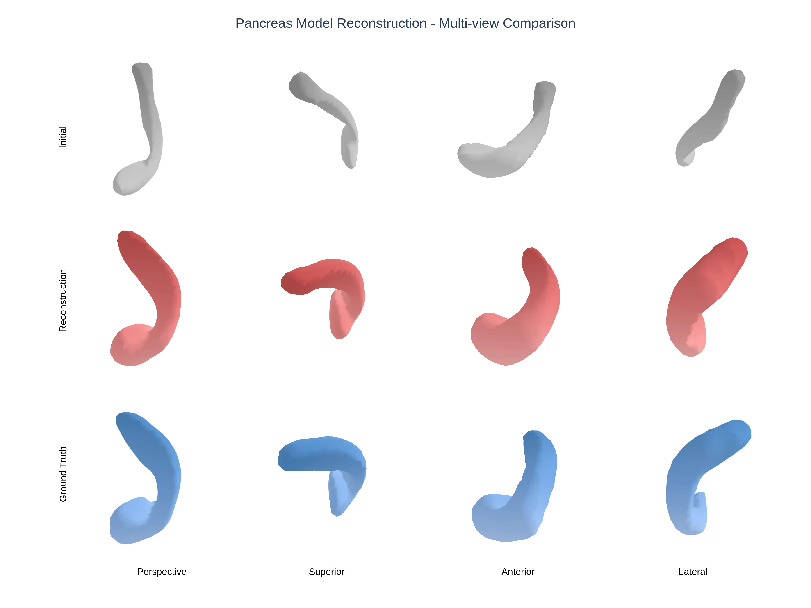
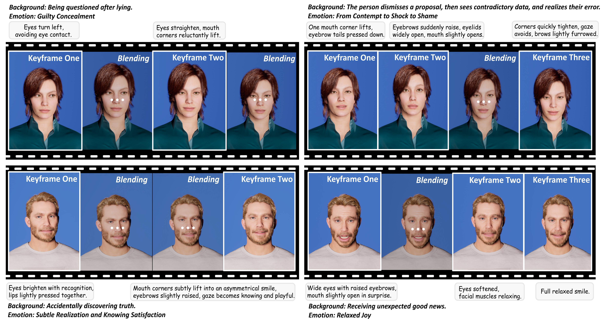
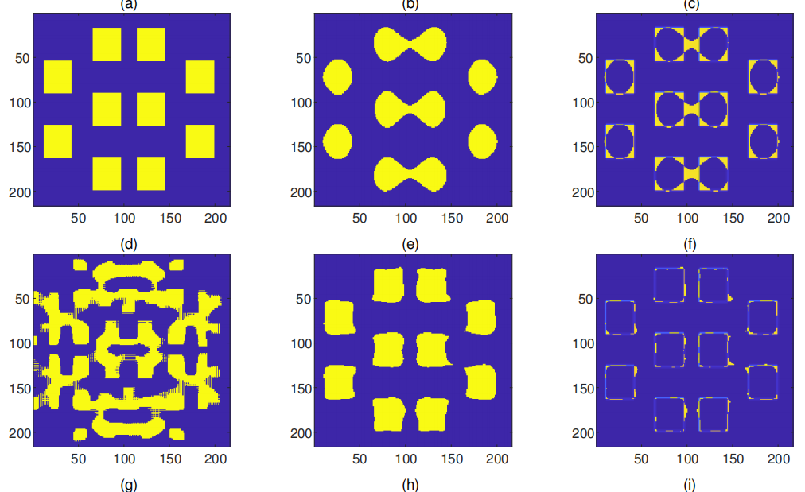

Selected Publications

Generative Prior-Guided Neural Interface Reconstruction for 3D Electrical Impedance Tomography
Journal of Computational Physics, 2026



An Alternating Direction Method of Multipliers for Inverse Lithography Problem
Numer. Math. Theor. Meth. Appl., 2023